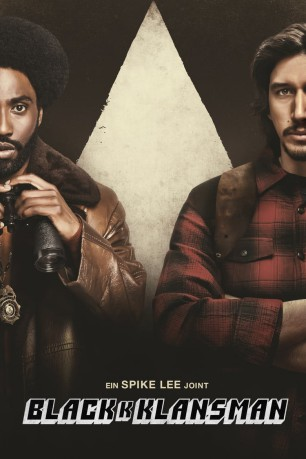
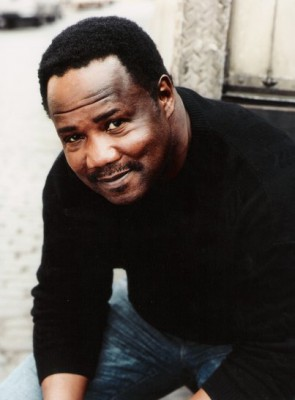
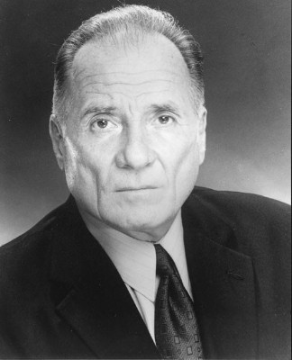
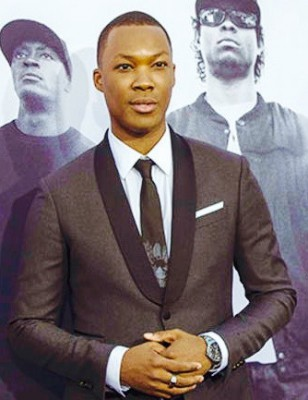
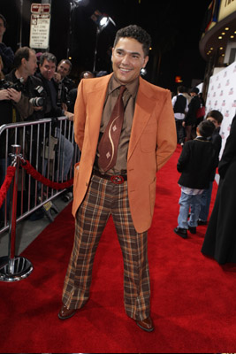

#10161 BlacKkKlansman
 gesehen am 06.01.2019
gesehen am 06.01.2019
 
 IMDB-Wertung: 7.6 / 10
IMDB-Wertung: 7.6 / 10  Tomatometer: 96
Tomatometer: 96  Metascore: 83
Metascore: 83 
Die frühen 1970er-Jahre. Der junge Polizist Ron Stallworth tritt als erster Afroamerikaner seinen Posten als Kriminalbeamter im Colorado Springs Police Department an. Entschlossen, sich einen Namen zu machen, startet der unerschrockene Cop eine aberwitzige und gefährliche Mission: den Ku-Klux-Klan zu infiltrieren und blosszustellen. Stallworth gibt vor, ein eingefleischter Extremist zu sein, und nimmt telefonisch Kontakt zur lokalen Gruppe der Rassistenvereinigung auf. Es gelingt ihm schnell in den inneren Kreis vorzudringen. Er imitiert die Sprache der hasserfüllten Rassisten so überzeugend, dass er sogar das Vertrauen des Klanführers David Duke gewinnt. Als die Undercover-Mission zunehmend komplexer wird, übernimmt Stallworths Kollege Flip Zimmerman Rons Rolle in den persönlichen Treffen. Dort erlangt er Insiderwissen über einen tödlichen Plan. Gemeinsam machen sich Stallworth und Zimmerman daran, die Organisation zu Fall zu bringen.
Jahr: 2018
Dauer: 135 Minuten
FSK: 12
Land: USA Studio: Focus FeaturesTonspuren: DD5.1 - ,
Untertitel: Deutsch,
Auflösung: 1080p (1920x808) Größe: 7383 MB
Genre: Drama, Krimi, Biographie
Regisseur:  Spike Lee
Spike Lee
Drehbuch: Charlie Wachtel, David Rabinowitz, Kevin Willmott, Spike Lee, Ron Stallworth
Soundtrack: Terence Blanchard
Darsteller:
 Alec Baldwin als Dr. Kennebrew Beauregard
Alec Baldwin als Dr. Kennebrew Beauregard- John David Washington als Ron Stallworth
-  Isiah Whitlock Jr. als Mr. Turrentine
 Robert John Burke als Chief Bridges
Robert John Burke als Chief Bridges Brian Tarantina als Officer Clay Mulaney
Brian Tarantina als Officer Clay Mulaney-  Arthur J. Nascarella als Officer Wheaton
- Ken Garito als Sergeant Trapp
 Frederick Weller als Master Patrolman Andy Landers
Frederick Weller als Master Patrolman Andy Landers Adam Driver als Flip Zimmerman
Adam Driver als Flip Zimmerman- Michael Buscemi als Jimmy Creek
- Laura Harrier als Patrice Dumas
- Damaris Lewis als Odetta
- Ato Blankson-Wood als Hakeem
-  Corey Hawkins als Kwame Ture
- Dared Wright als Officer Cincer
- Faron Salisbury als Officer Sharpe
 Ryan Eggold als Walter Breachway
Ryan Eggold als Walter Breachway- Jasper Pääkkönen als Felix Kendrickson
 Paul Walter Hauser als Ivanhoe
Paul Walter Hauser als Ivanhoe- Ashlie Atkinson als Connie Kendrickson
 Topher Grace als David Duke
Topher Grace als David Duke- Elise Hudson als Librarian
 Danny Hoch als Agent Y
Danny Hoch als Agent Y-  Nicholas Turturro als Walker
- Ryan Preimesberger als Jesse Nayyar
- Harry Belafonte als Jerome Turner
- Jared Johnston als CSPD Officer Brickhouse
 Michael J. Burg als CSPD Officer Myers
Michael J. Burg als CSPD Officer Myers- Bob Angelini als Klansman (uncredited)
- Gary Ayash als 1960's Bar Patron (uncredited)
- Chris Banks als Klansman (uncredited)
- Damien Bosco als CSPD Officer (uncredited)
- Kacie Calhoun als Inductee Wife (uncredited)
- Curt Clendenin als Klansman (uncredited)
- David Duke als Himself (archive footage) (uncredited)
- Michael Erik als Protestor (uncredited)
 Craig muMs Grant als Jabbo (uncredited)
Craig muMs Grant als Jabbo (uncredited)- Timal McKen als Black Panther (uncredited)
 John Mitchell als Klansman (uncredited)
John Mitchell als Klansman (uncredited) Tom Stratford als Hotel Clerk (uncredited)
Tom Stratford als Hotel Clerk (uncredited)- Donald Trump als Himself (archive footage) (uncredited)
- Tejon Wright als College Student (uncredited)
- Victor Colicchio als Steve
- Paul Diomede als Jerry
- Gina Belafonte als Gina B.
- Ernest Rayford als Josh the Waiter
- James Campbell als Waiter
- Jeremy J. Nelson als Records Room Officer
- Nichelle Bolden als Student Activist
- Tessa John-Connor als Student (uncredited)
Datei: X:\2018(A-F)\BlacKkKlansman (2018, FSK12, 1920x808).mkv seit 13.12.2018
Festplatte: HD 2017(A-Z)-2018(A-F)
 Es gibt insgesamt 151 Filme in der Gruppe '2018(A-F)'
Es gibt insgesamt 151 Filme in der Gruppe '2018(A-F)'